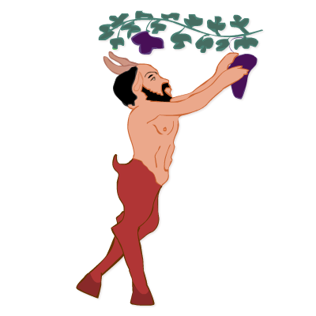
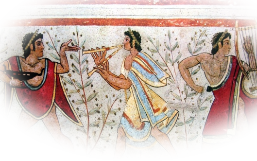
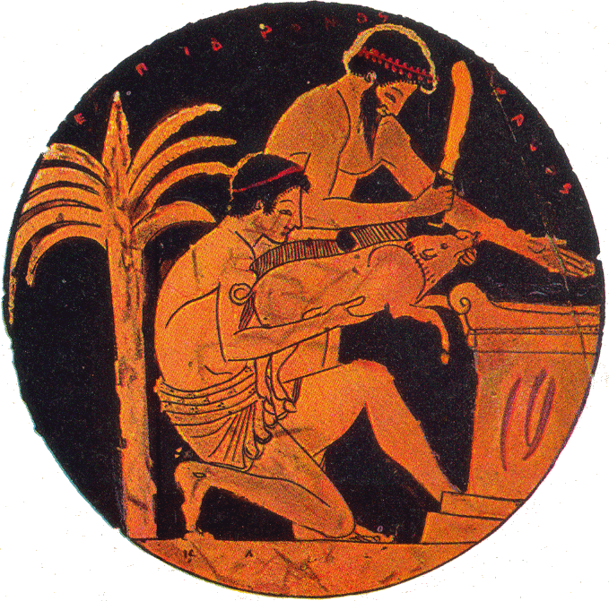
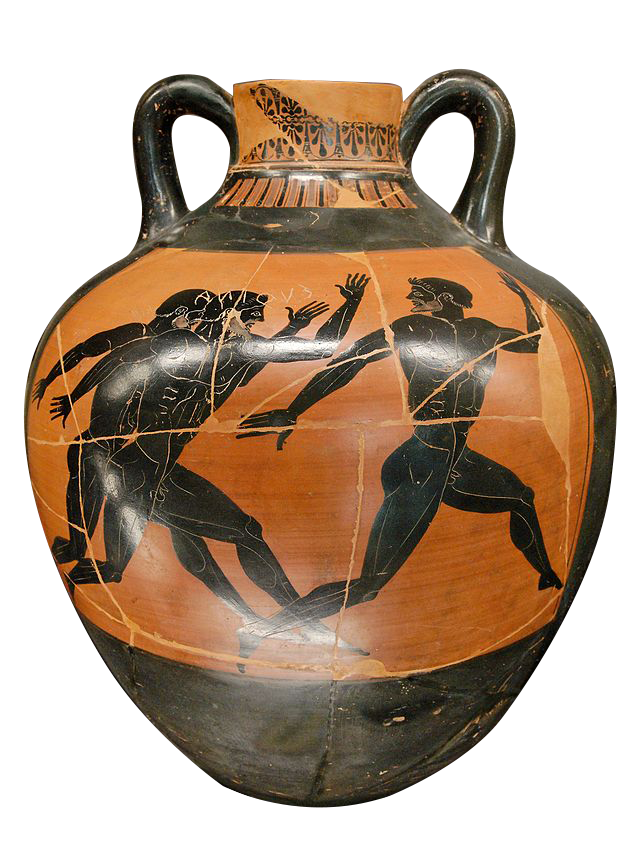

Présentation
L'expression « Grèce antique » renvoie à la civilisation des peuples de langue et de culture grecques durant l'Antiquité. On entend parfois plus précisément par Grèce antique la Grèce classique, en particulier l'Athènes du ve siècle av. J.-C., celle de Périclès et de la tragédie, et celle du ive siècle av. J.-C., de Platon et d'Aristote. Toutefois, la culture grecque s'est développée plus tôt : les épopées de l’Iliade et de l’Odyssée remontent sans doute au viiie siècle av. J.-C. Elle a aussi conservé un réel dynamisme au cours des siècles suivants, pendant lesquels elle s'est étendue dans de nombreuses autres régions. En Orient, après les conquêtes d'Alexandre le Grand, la culture grecque s'est mêlée aux cultures antérieures pour donner naissance, à l'époque hellénistique, à la civilisation des royaumes hellénistiques. Dans le bassin méditerranéen, la culture grecque a joué un rôle décisif, notamment du fait de l'influence qu'elle eut à Rome, où le grec devint la langue du savoir utilisée par les élites, et de l'influence qu'elle exerça dans le monde arabo-musulman, qui traduisit en arabe de nombreux traités grecs. C'est ainsi que certaines productions politiques et culturelles du monde grec ont eu un rôle majeur dans le développement de la civilisation occidentale. Les chercheurs estiment souvent que les Grecs sont à l'origine d'une nouvelle manière d'appréhender le monde affranchissant la pensée des dogmes religieux. Contrairement aux grandes religions monothéistes, la religion grecque est avant tout basée sur l'orthopraxie1, il est en ce sens impossible de parler de dogme et mettant l'homme au cœur de leurs réflexions. On les considère comme les fondateurs de la philosophie (les présocratiques, Socrate, Platon, Aristote, etc.). Inventeurs de la logique, ils peuvent être considérés comme des précurseurs de l'investigation scientifique (physique, mathématiques, astronomie). La littérature grecque eut sans doute longtemps moins d'influence que celle de ses imitateurs romains. L'art grec reste considéré comme un modèle de l'équilibre classique.
   